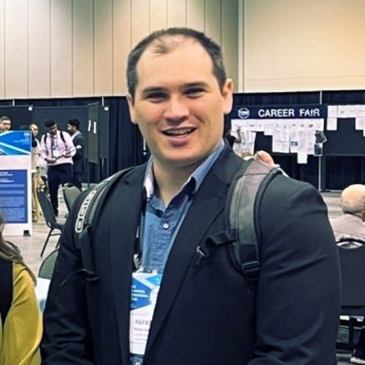
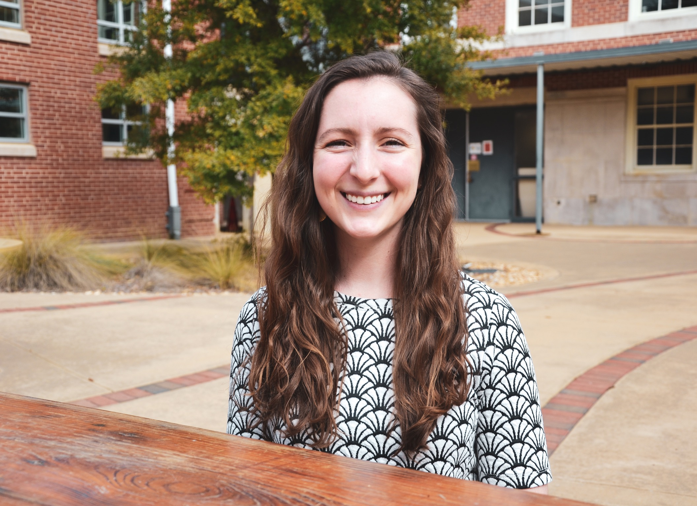

Our Team
Dr. Yin Bao
Assistant Professor
Current Graduate Students
Research Assistants
Former Graduates

Rafael Bidese
PhD (2019 - 2023)
Corteva Agriscience
Sharif Shabani
MS (2021 - 2023)
Optix Technologies

Mary Beth Cassity
MS (2021 - 2023)
Cornell University

Kamand Bagherian
MS (2020 - 2022)
Qlik
Nariman Niknejad
MS (2020 - 2022)
Michigan State University (PhD)

Vinika Gupta
MS (2020 - 2021)
Nordstrom